Demonstration Study (Stratified)
demonstration-stratified.RmdA pooled functional profile tells us about the community total. Here we look inside that total and follow the relationships between functions and their microbial contributors. Our aim is to connect an overview of the selected associations with the contribution distributions and model effects behind them.
Study data
This demonstration examines predicted functional contributions in the pancreatic tumor microbiome. The study context comes from Riquelme and colleagues, who used 16S rRNA gene sequencing to characterize tumor microbial communities in patients with pancreatic ductal adenocarcinoma. The comparison distinguishes short-term survivors (STS) and long-term survivors (LTS).
Here we use stratified PICRUSt2 predictions to connect ASV-level contributions with taxonomy and sample groups. The examples compare STS with LTS at genus level, using STS as the reference. These are predicted functional contributions inferred from 16S data, rather than directly measured functional genes.
| Data component | Role in the analysis |
|---|---|
| Stratified KO contribution table | Each row records one sample–ASV–KO combination and its predicted
contribution in taxon_function_abun. |
| ASV-level phyloseq object | Links ASV identifiers to taxonomy and samples to their STS/LTS metadata. Keep the original ASV identifiers when preparing inputs. |
| ASV phylogenetic tree | Supplies evolutionary context for the optional phylogeny Sankey views. Its tip labels must match the ASV identifiers. |
| Fitted result lists | Store the separate taxon-centered and function-centered analyses used by the plots. |
The plotting setup provides six synthetic Control/Treatment samples for learning the same plotting interfaces. Those teaching inputs are separate from the study figures and do not reproduce the STS/LTS numerical results. Study-specific reproduction requires the matching contribution data, cohort and fitted result lists. For study data access, contact Dr. Liangliang Zhang at lxz716@case.edu and cite the original study.
How should you read these views together?
Start with the question, rather than the plot type. A taxon-centered view asks about functions within a taxon; a function-centered view asks about contributors to a function. Fit those directions separately. Within either direction, move from an overview to an individual relationship, checking that rank, samples and contrast stay the same.
Sankey and Chord are deliberately different summaries. Sankey width counts selected associations. Chord width represents mean predicted contribution, while its outer bars show absolute model effect. A broad ribbon therefore does not mean the same thing in the two diagrams.
1. Prepare the data
Begin with the ASV-level phyloseq object and the matching PICRUSt2 KO contribution table. Keep the ASV identifiers. They connect predicted functions to taxonomy and, when available, the tree. Replace the paths and metadata column below with your study’s values. Here STS is the reference and LTS is the target; change both labels if your comparison differs.
library(MicroFun)
library(phyloseq)
strat_path <- "my_study/KO_contrib.tsv.gz"
ps <- readRDS("my_study/phyloseq_asv.rds")
group_col <- "group" # Replace with your metadata column
rank <- "Genus"
reference <- "STS"
target <- "LTS"
out <- "MicroFun_study_figures"
dir.create(out, recursive = TRUE, showWarnings = FALSE)
stopifnot(file.exists(strat_path), inherits(ps, "phyloseq"))
meta <- data.frame(sample_data(ps))
stopifnot(group_col %in% names(meta), rank %in% rank_names(ps))
selected_samples <- rownames(meta)[meta[[group_col]] %in% c(reference, target)]
ps <- prune_samples(selected_samples, ps)
meta <- data.frame(sample_data(ps))
group_counts <- table(factor(meta[[group_col]], levels = c(reference, target)))
print(group_counts)
stopifnot(all(group_counts > 0), sum(group_counts) > 5L)
ids <- data.table::fread(
strat_path, select = c("sample", "taxon"),
colClasses = "character", showProgress = FALSE
)
stopifnot(all(sample_names(ps) %in% ids$sample))
selected_asvs <- unique(ids$taxon[ids$sample %in% sample_names(ps)])
print(c(matched_asvs = sum(selected_asvs %in% taxa_names(ps)),
contribution_asvs = length(selected_asvs)))
stopifnot(any(selected_asvs %in% taxa_names(ps)))
rm(ids)
# Optional: needed only for the phylogeny Sankey variants.
study_tree <- phy_tree(ps, errorIfNULL = FALSE)
# If the object has no tree, load the matching ASV tree instead:
# study_tree <- ape::read.tree("my_study/asv_tree.nwk")Do the sample counts and ASV overlap match your intended cohort?
Resolve unexpected missing identifiers before fitting. The input
guide explains the required columns and additional checks. If you
only want to practise the plotting calls, use the teaching setup instead of this
preparation and analysis section, then set
study_tree <- demo$phylo_tree.
2. Fit and inspect the two analyses
Which question do you want to answer? Within a taxon, ask which predicted functions differ between groups. Within a function, ask which taxa contribute differently. We fit both directions separately because they organize and test different feature tables.
The taxon-centered KO analysis below aggregates contributions using a local mapping, then contacts KEGG for pathway annotation. The function-centered KO analysis does not use that pathway annotation step. Academic users do not need to apply for an API key. See mapping and network access before running the study analysis offline.
result_taxa <- pathway_sdaa(
stratified_path = strat_path, physeq = ps,
taxon_level = rank, group = group_col,
direction = "taxa", pathway = "KO",
daa_method = "Maaslin2", reference = reference,
p.adjust.method = "BH", threshold = 0.05
)
result_fun <- pathway_sdaa(
stratified_path = strat_path, physeq = ps,
taxon_level = rank, group = group_col,
direction = "function", pathway = "KO",
daa_method = "Maaslin2", reference = reference,
p.adjust.method = "BH", threshold = 0.05
)
saveRDS(result_taxa, file.path(out, "sdaa_taxa.rds"))
saveRDS(result_fun, file.path(out, "sdaa_function.rds"))
names(result_taxa)
names(result_fun)
head(result_taxa[[1]])
head(result_fun[[1]])With KO input, the taxon-centered route aggregates mapped KOs into
KEGG pathways; the function-centered route retains individual KOs. BH
adjustment is applied within each fitted table. MaAsLin2 effects are AST
coefficients for the target relative to the reference. Check the
recorded contrast and effect_type before interpreting their
signs. See the analysis
guide for covariates and mapping details.
Choose one available taxon and one available function for the detailed panels. The first nonempty entry is a convenient starting point; replace either selection with a name printed above when you have a particular question in mind.
available_taxa <- names(result_taxa)[vapply(result_taxa, nrow, integer(1)) > 0L]
available_functions <- names(result_fun)[vapply(result_fun, nrow, integer(1)) > 0L]
stopifnot(length(available_taxa) > 0L, length(available_functions) > 0L)
selected_taxon <- available_taxa[1]
selected_function <- available_functions[1]
# For example, when present in your results:
# selected_taxon <- "Lactobacillus"
# selected_function <- "K00844"The figures below illustrate the study views. Your selected taxa, functions, cohort and fitted results determine the panels produced by the code; the smaller teaching dataset produces its own examples.
3. Start with a taxon
This perspective helps us ask which predicted functions are associated with the taxa of interest. We begin with the selected links, then inspect their weights, sample distributions and signed effects.
Sankey diagrams follow the selected associations
p_tax_taxonomy <- tax2fun_sankey(
result_taxa,
tree_mode = "taxonomy", physeq = ps
)
save_sankey(p_tax_taxonomy, file.path(out, "tax2fun_taxonomy.html"))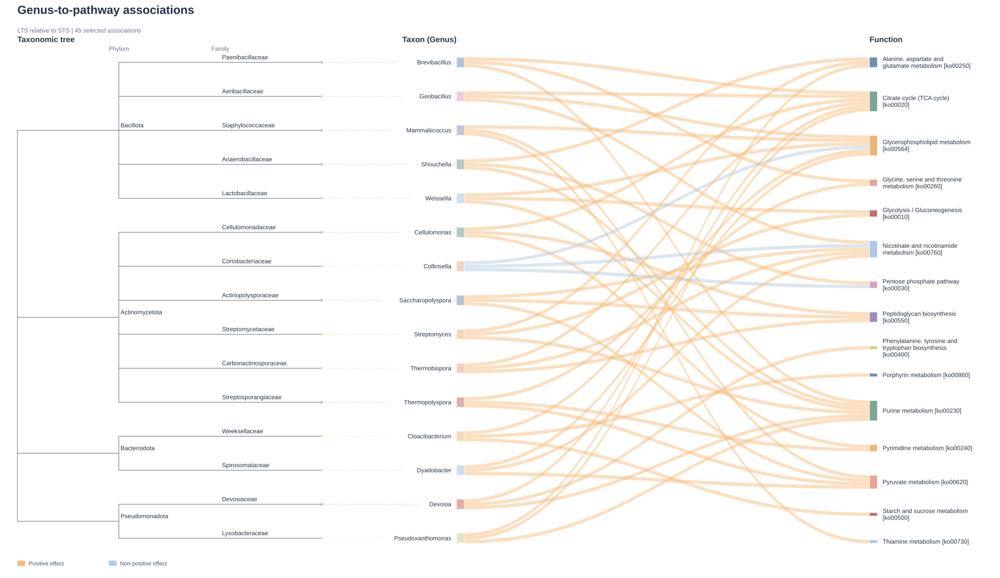
Follow a ribbon from one endpoint to the other. Where do the selected relationships concentrate, and which taxa or functions would you like to inspect more closely? The taxonomy view provides classification context on the taxon side; the phylogeny view uses matching ASV evolutionary relationships. The taxon-side tree appears on the left in this orientation.
Compare the phylogeny view
stopifnot(!is.null(study_tree))
p_tax_phylogeny <- tax2fun_sankey(
result_taxa,
tree_mode = "phylogeny", physeq = ps,
phylo_tree = study_tree
)
save_sankey(p_tax_phylogeny, file.path(out, "tax2fun_phylogeny.html"))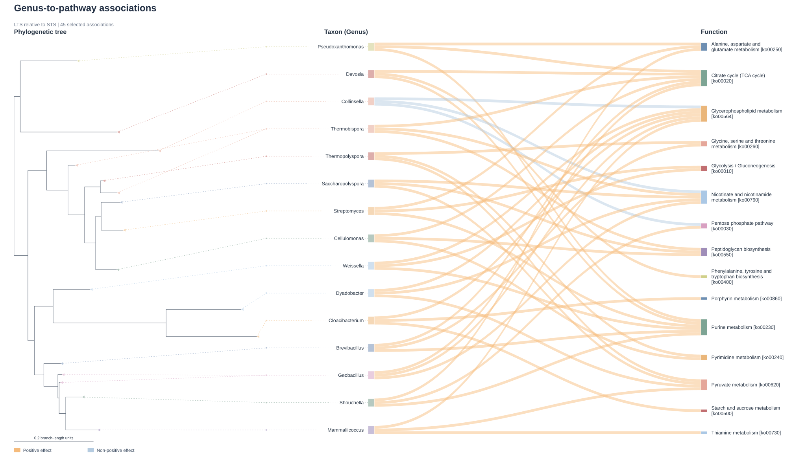
Adjust the Sankey nodes
p_tax_plain <- tax2fun_sankey(
result_taxa,
tree_mode = "none"
)
save_sankey(p_tax_plain, file.path(out, "tax2fun_draggable.html"))Drag a node up or down to arrange the relationships you want to inspect. The links follow the node. Open the draggable diagram in its own page.
Dragging changes the browser layout, not the contributions or model results. Positions are not automatically saved back to R and reset when the page is reloaded. The taxonomy and phylogeny variants use fixed layouts.
Chord diagrams add contribution weights
p_tax_chord <- tax2fun_chord(
result_taxa, strat_path, ps, group = group_col,
contrast = c(reference, target), draw = FALSE
)
save_chord(p_tax_chord, file.path(out, "tax2fun_chord.png"))
save_chord(p_tax_chord, file.path(out, "tax2fun_chord.pdf"))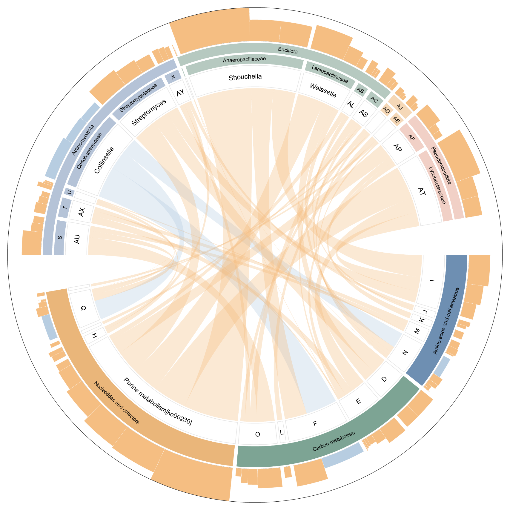
Now ask how much predicted contribution is attached to the selected relationships. Chord widths use the balanced mean contribution, giving the two group means equal weight. Ribbon colour describes effect direction, and the outer bars describe absolute model effect. Reading these encodings separately helps avoid confusing a large contribution with a large group-associated effect.
Read the Chord legends
The bands identify taxa and functional groups. Letter codes provide a compact route to the longer sector labels. Ribbon width represents balanced mean contribution; colour represents effect sign; outer-bar height represents absolute model effect.
The save_chord() calls above also export the legends.
The PNG has a companion tax2fun_chord_legend.pdf, and the
main PDF includes the legend pages. Sector codes are recorded in
tax2fun_chord_label_mapping.csv. The four images below show
those companion legend views.
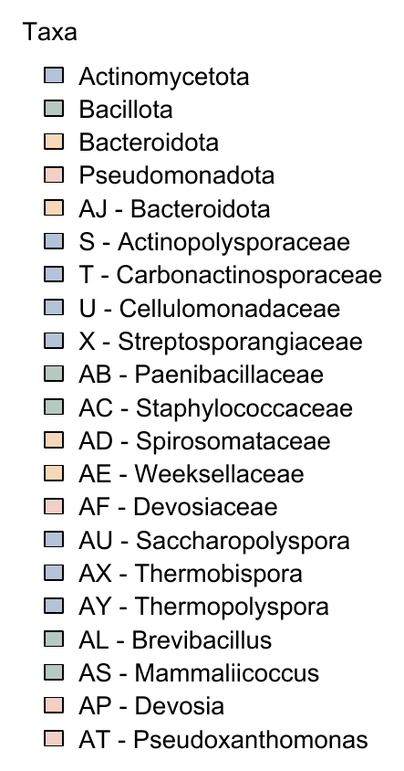
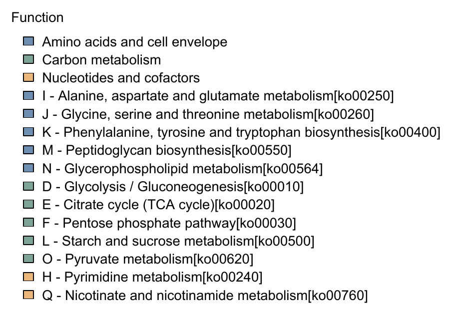

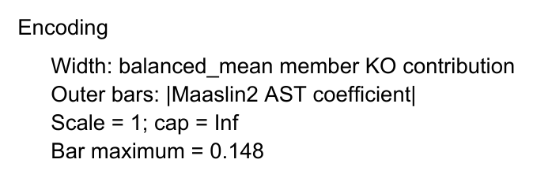
Boxplots return to the sample distributions
tax_boxes <- tax2fun_box(strat_path, result_taxa, ps, group = group_col)
p_tax_box <- tax_boxes[[selected_taxon]]
ggplot2::ggsave(file.path(out, "tax2fun_box.pdf"), p_tax_box,
width = 10, height = 6)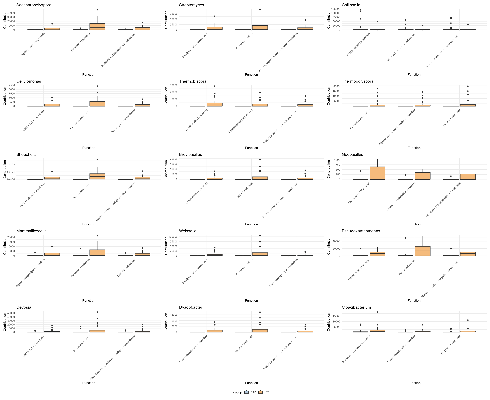
A summary diagram cannot show every sample. Use the boxplots to inspect spread, overlap and possible unusual observations in a selected relationship. Read the group labels and axis transformation before comparing panels; a shared visual height does not necessarily imply the same abundance on the original scale.
Dendrogram overview at genus level
Start with the overall association structure before choosing a few taxa to inspect. This genus-level overview excludes entries labelled incertae sedis or Other and shows up to five functions per retained genus, ranked by absolute modeled effect. The overview covers the retained genera; it is not an unrestricted display of every tested association.
overview_genera <- names(result_taxa)[
!grepl("incertae|(^|[ _])other($|[ _])", names(result_taxa),
ignore.case = TRUE)
]
p_tax_overview <- tax2fun_dendro(
result_taxa, taxa_list = overview_genera, taxon_level = "Genus",
top_n_per_taxon = 5, label_size = 2, wrap_width = 36
)$plot
ggplot2::ggsave(file.path(out, "tax2fun_dendrogram_genus_overview.svg"),
p_tax_overview, width = 14, height = 13)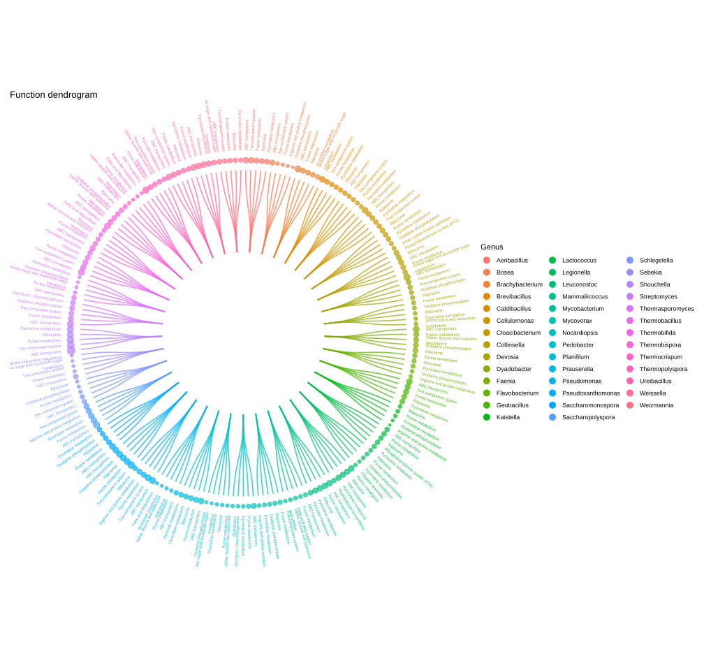
Colours identify genera, branches connect each genus to its displayed functions, and point size represents absolute model effect. Repeated labels such as ABC transporters, purine metabolism and ribosome show that related functional categories occur among several genera’s selected associations. They do not establish the same effect direction, equal contributions, or evolutionary proximity. This is an association diagram, not a phylogenetic tree.
Open the full-size genus overview to read the individual labels.

Choose taxa for a focused dendrogram
The next figure is a focused selection of taxa, rather than the full
genus overview. Use taxa_list to choose the genera that
match your biological question. Replace the example names below with
entries from names(result_taxa).
taxa_of_interest <- c("Saccharopolyspora", "Streptomyces", "Pseudoxanthomonas")
p_tax_dendro <- tax2fun_dendro(
result_taxa, taxa_list = taxa_of_interest,
top_n_per_taxon = 3, label_size = 2.6, wrap_width = 20
)$plot
p_tax_dendro <- p_tax_dendro + ggplot2::coord_fixed(
xlim = c(-1.6, 1.6), ylim = c(-1.6, 1.6), clip = "off"
)
ggplot2::ggsave(file.path(out, "tax2fun_dendrogram.pdf"), p_tax_dendro,
width = 10, height = 7.5)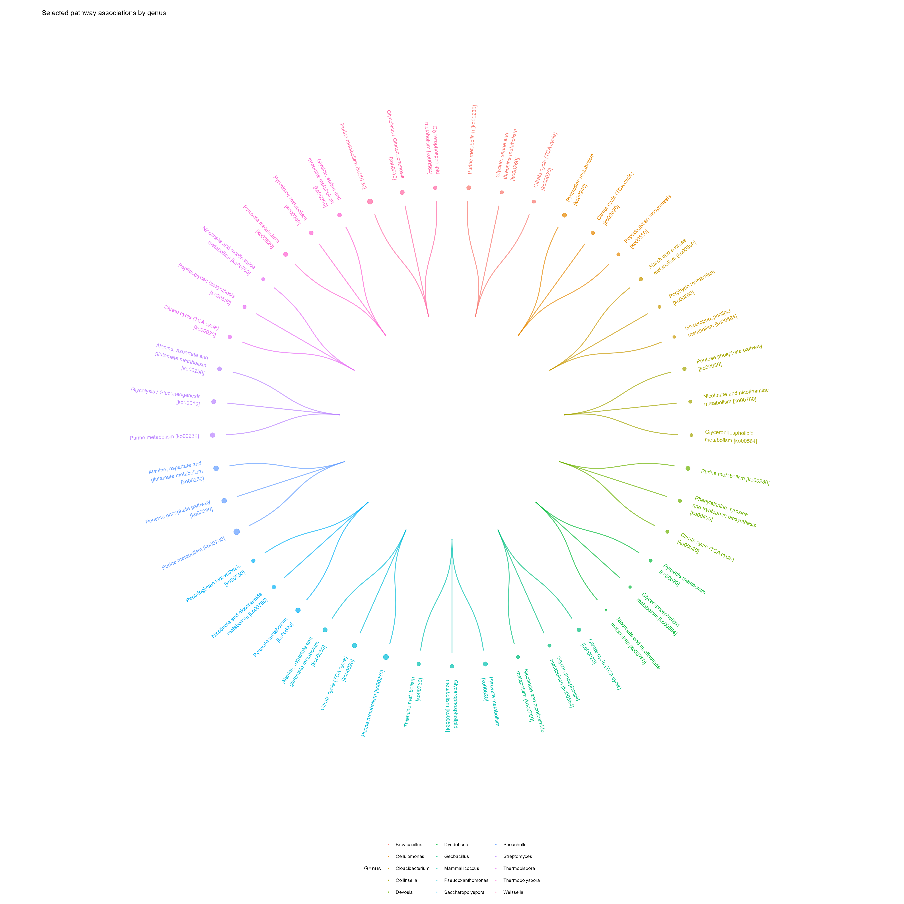
The circular view places related parts of the analysis on branches so that several selected relationships can be inspected together. Point size represents absolute effect. This branching organizes taxa and functions; it should not be interpreted as evolutionary distance or an abundance-clustering result.
Signed effects reveal the contrast
tax_effects <- tax2fun_logfc(result_taxa, top_n = 3)
p_tax_effect <- tax_effects[[selected_taxon]] +
ggplot2::labs(y = "MaAsLin2 AST coefficient")
ggplot2::ggsave(file.path(out, "tax2fun_effect.pdf"), p_tax_effect,
width = 8, height = 5)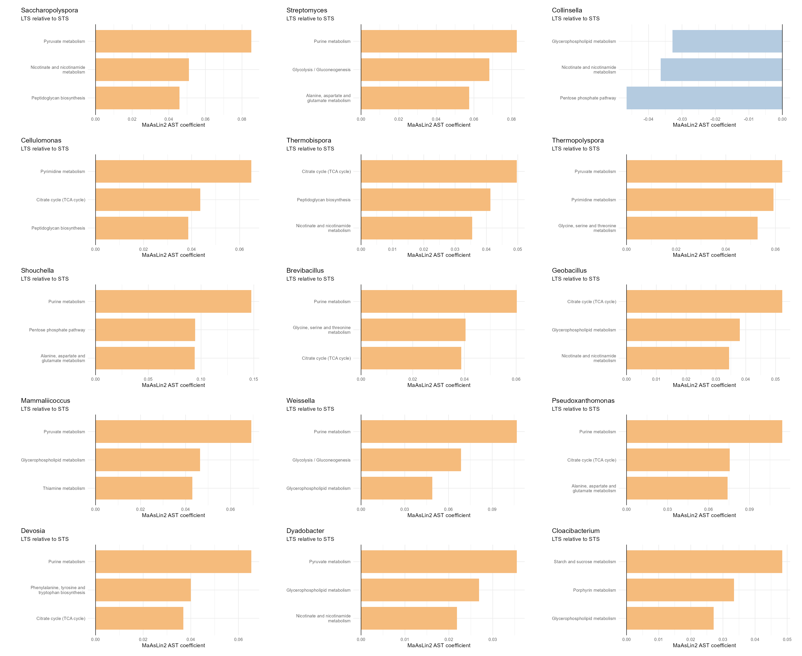
Finally, look directly at the modeled direction and magnitude. Positive and negative bars refer to the recorded target-versus-reference contrast. For MaAsLin2, these values are AST coefficients. A large coefficient is not automatically the largest contribution, and it should not be relabeled as a log fold change without checking the model scale.
4. Start with a function
This perspective begins with a functional feature and asks about its contributors. Use the function-oriented fitted results so that the plotted estimates answer that question directly.
Sankey diagrams follow the selected associations
stopifnot(!is.null(study_tree))
p_fun_phylogeny <- fun2tax_sankey(
result_fun,
pathway = "KO", group_functions = FALSE,
tree_mode = "phylogeny", physeq = ps,
phylo_tree = study_tree
)
save_sankey(p_fun_phylogeny, file.path(out, "fun2tax_phylogeny.html"))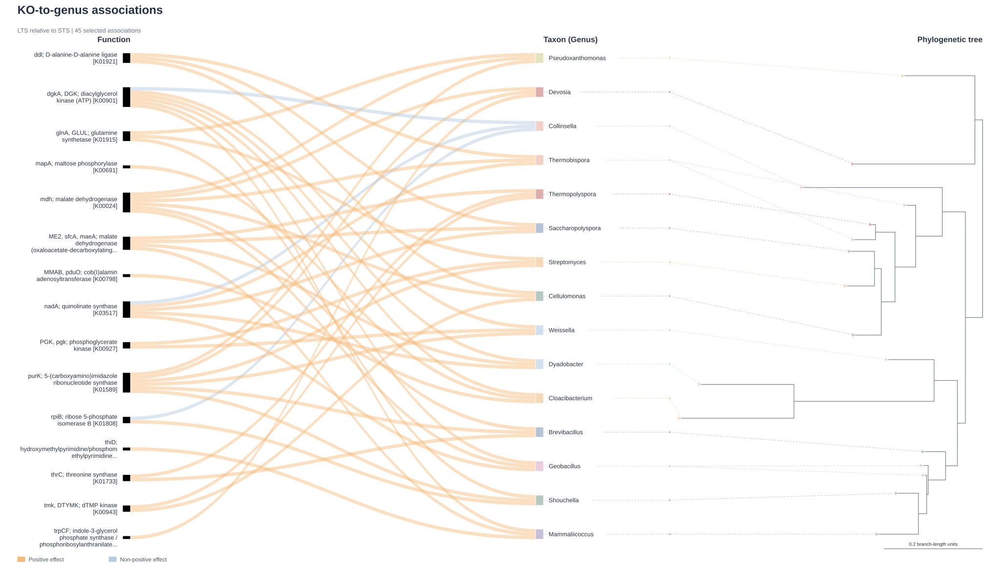
Follow a ribbon from one endpoint to the other. Where do the selected relationships concentrate, and which taxa or functions would you like to inspect more closely? The taxonomy view provides classification context on the taxon side; the phylogeny view uses matching ASV evolutionary relationships. The taxon-side tree appears on the right in this orientation.
Compare the taxonomy view
p_fun_taxonomy <- fun2tax_sankey(
result_fun,
pathway = "KO", group_functions = FALSE,
tree_mode = "taxonomy", physeq = ps
)
save_sankey(p_fun_taxonomy, file.path(out, "fun2tax_taxonomy.html"))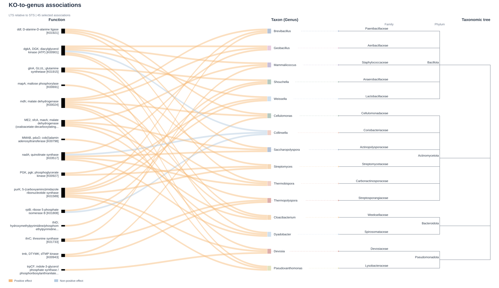
Adjust the Sankey nodes
p_fun_plain <- fun2tax_sankey(
result_fun,
pathway = "KO", group_functions = FALSE,
tree_mode = "none"
)
save_sankey(p_fun_plain, file.path(out, "fun2tax_draggable.html"))Drag a node up or down to arrange the relationships you want to inspect. The links follow the node. Open the draggable diagram in its own page.
Dragging changes the browser layout, not the contributions or model results. Positions are not automatically saved back to R and reset when the page is reloaded. The taxonomy and phylogeny variants use fixed layouts.
Chord diagrams add contribution weights
p_fun_chord <- fun2tax_chord(
result_fun, strat_path, ps, group = group_col,
contrast = c(reference, target), functions = selected_function,
draw = FALSE
)
save_chord(p_fun_chord, file.path(out, "fun2tax_chord.png"))
save_chord(p_fun_chord, file.path(out, "fun2tax_chord.pdf"))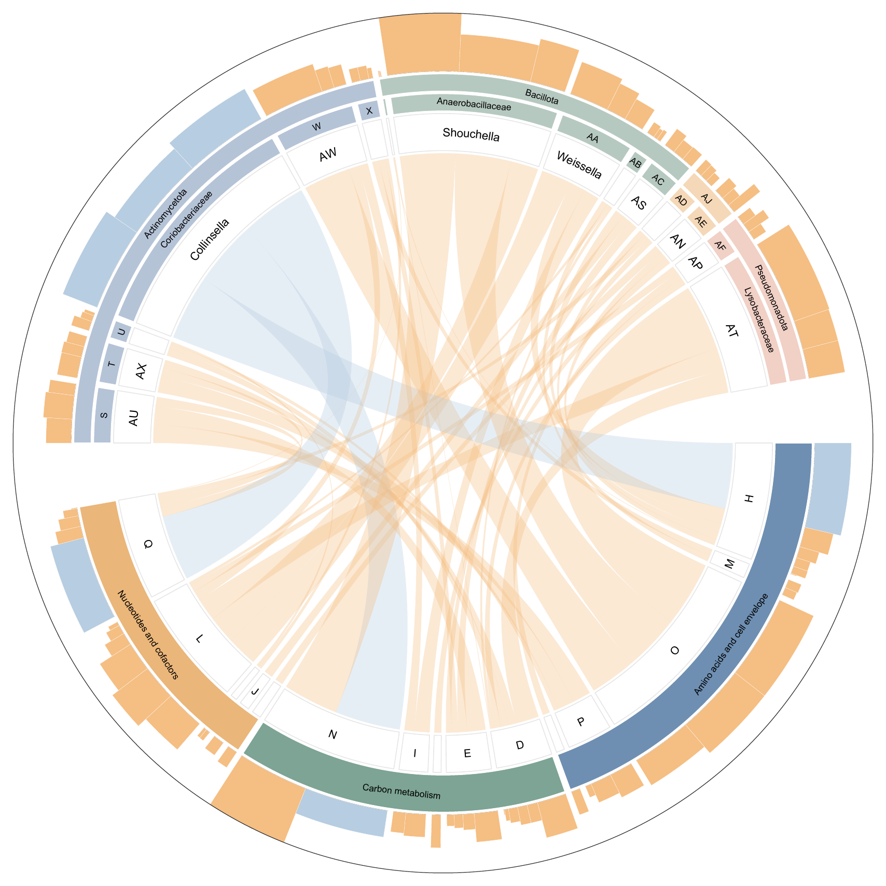
Now ask how much predicted contribution is attached to the selected relationships. Chord widths use the balanced mean contribution, giving the two group means equal weight. Ribbon colour describes effect direction, and the outer bars describe absolute model effect. Reading these encodings separately helps avoid confusing a large contribution with a large group-associated effect.
Read the Chord legends
The bands identify taxa and functional groups. Letter codes provide a compact route to the longer sector labels. Ribbon width represents balanced mean contribution; colour represents effect sign; outer-bar height represents absolute model effect.
The save_chord() calls above also export the legends.
The PNG has a companion fun2tax_chord_legend.pdf, and the
main PDF includes the legend pages. Sector codes are recorded in
fun2tax_chord_label_mapping.csv. The four images below show
those companion legend views.
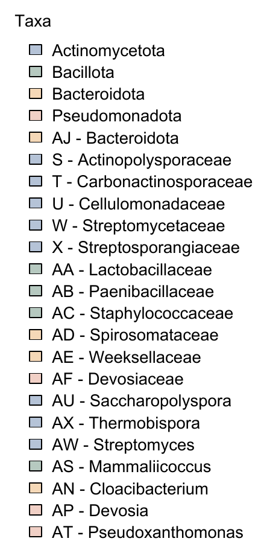
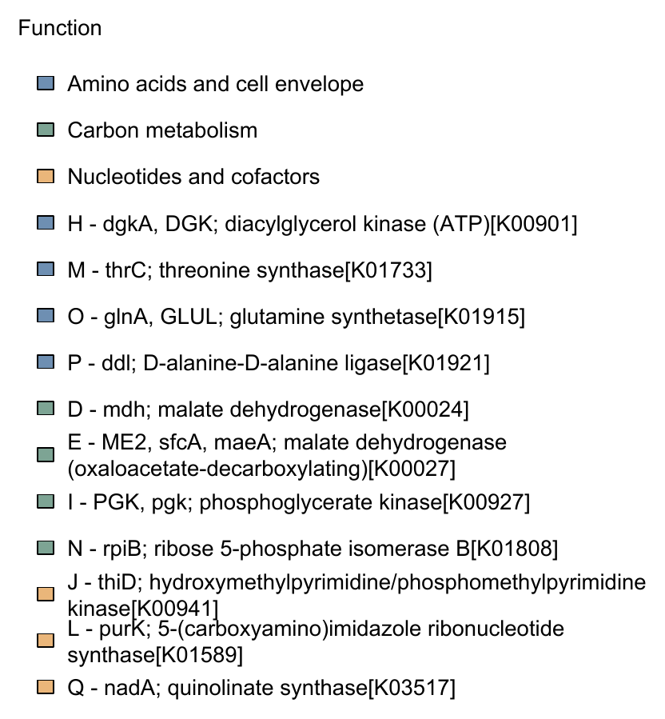
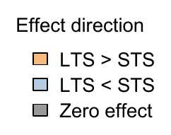
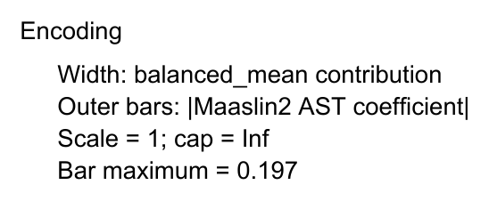
Boxplots return to the sample distributions
fun_boxes <- fun2tax_box(
strat_path, result_fun, ps, group = group_col,
pathway = "KO", group_functions = FALSE
)
p_fun_box <- fun_boxes[[selected_function]]
ggplot2::ggsave(file.path(out, "fun2tax_box.pdf"), p_fun_box,
width = 10, height = 6)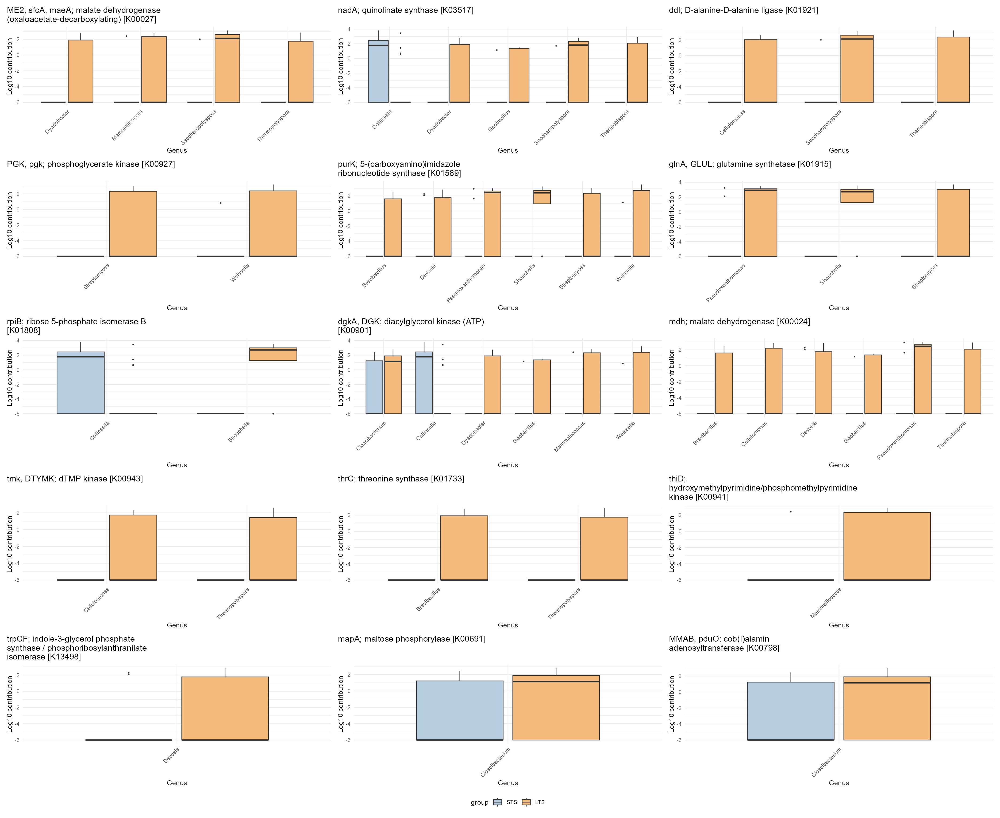
A summary diagram cannot show every sample. Use the boxplots to inspect spread, overlap and possible unusual observations in a selected relationship. Read the group labels and axis transformation before comparing panels; a shared visual height does not necessarily imply the same abundance on the original scale.
Dendrograms organize the associations
p_fun_dendro <- fun2tax_dendro(
result_fun, top_n_per_function = 3, label_size = 2.6, wrap_width = 20
)$plot
p_fun_dendro <- p_fun_dendro + ggplot2::coord_fixed(
xlim = c(-1.6, 1.6), ylim = c(-1.6, 1.6), clip = "off"
)
ggplot2::ggsave(file.path(out, "fun2tax_dendrogram.pdf"), p_fun_dendro,
width = 10, height = 7.5)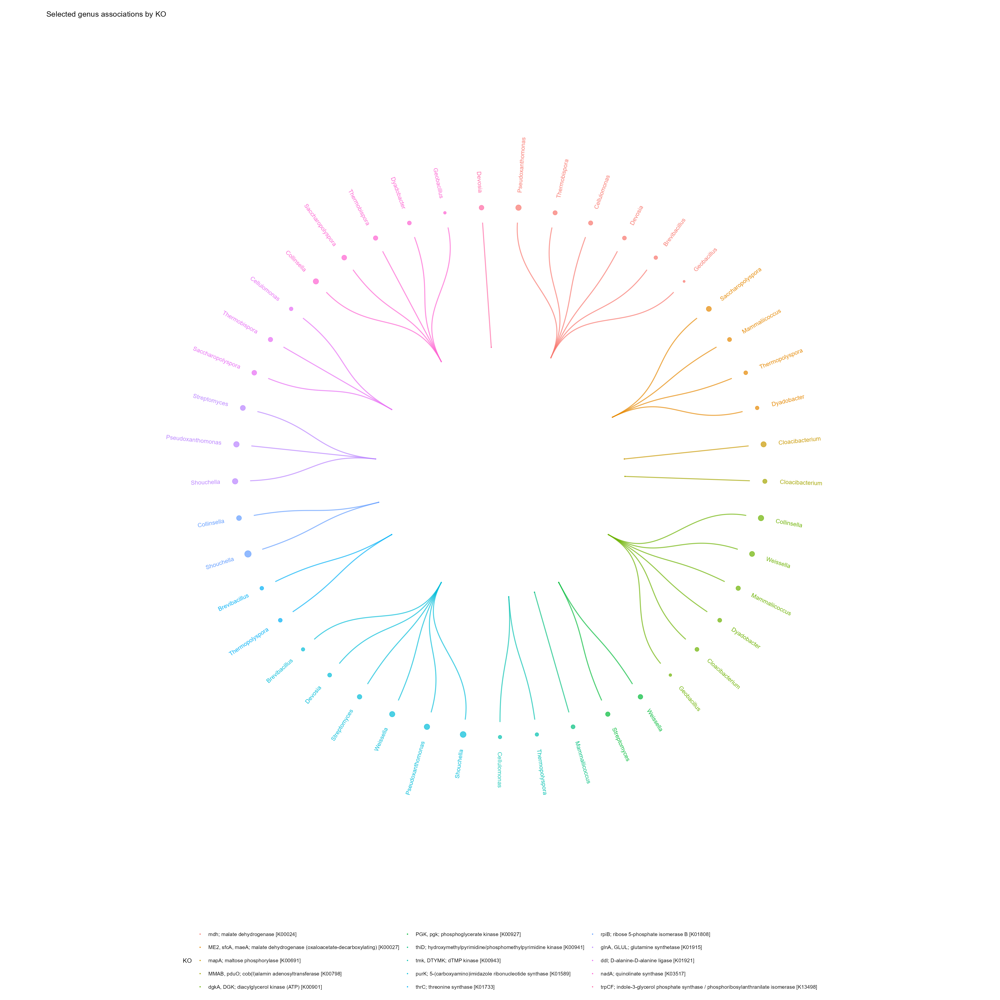
The circular view places related parts of the analysis on branches so that several selected relationships can be inspected together. Point size represents absolute effect. This branching organizes taxa and functions; it should not be interpreted as evolutionary distance or an abundance-clustering result.
Signed effects reveal the contrast
fun_effects <- fun2tax_logfc(result_fun, top_n = 3)
p_fun_effect <- fun_effects[[selected_function]] +
ggplot2::labs(y = "MaAsLin2 AST coefficient")
ggplot2::ggsave(file.path(out, "fun2tax_effect.pdf"), p_fun_effect,
width = 8, height = 5)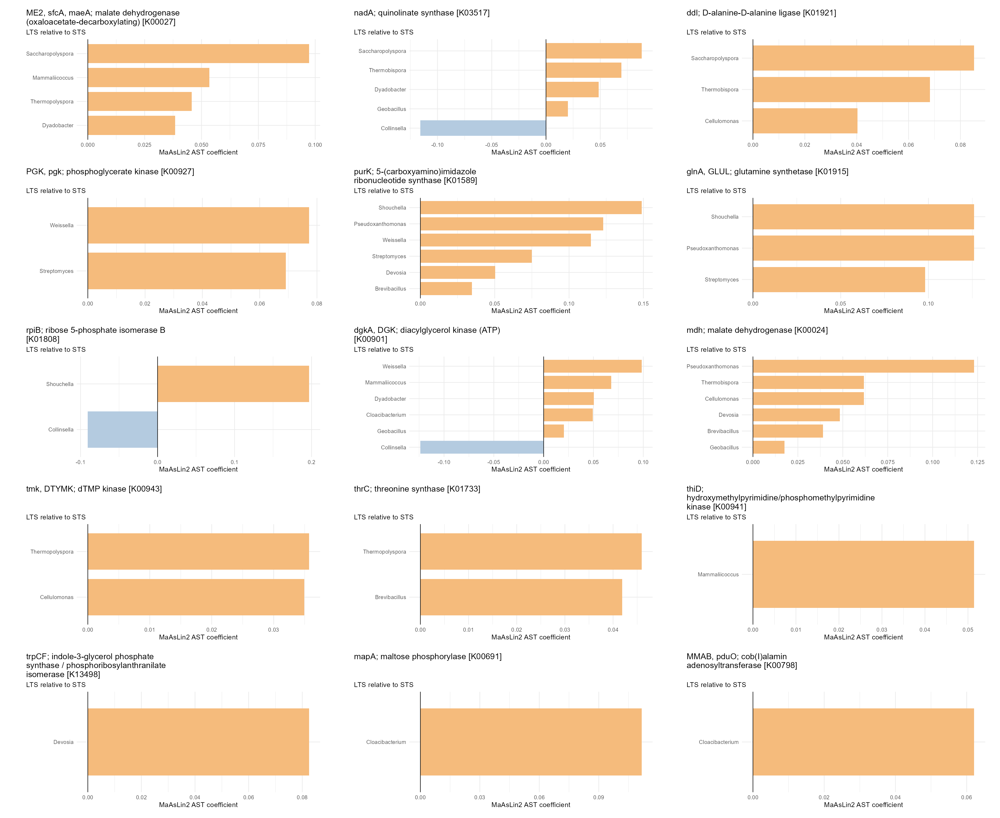
Finally, look directly at the modeled direction and magnitude. Positive and negative bars refer to the recorded target-versus-reference contrast. For MaAsLin2, these values are AST coefficients. A large coefficient is not automatically the largest contribution, and it should not be relabeled as a log fold change without checking the model scale.